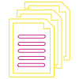

Python Library:Pycrfsuite, Tensorflow, Keras
Algorithm:Conditional Random Field, LSTM
In a Nutshell
Get a bite-sized summary of huge TL; DR documents (invoices, bank statements, investor reports,
books, articles, journals, reviews, tweets, comments, legislation). Our text summarization
software can analyse local sentiments and global sentiments of our text data.
Functions (Use Cases)
Analyse Voice of Customers to analyse Pain points from reviews from App store, Surveys or
Social media platforms.
Identify sentiment and tone of customer to enhance Customer experience.
Identify and extract hidden topics from raw text.
Extract batch number, issue date, email ID, org name etc., irrespective of their position.
Redact confidential information in summaries generated of long TL:DR documents across
industries such as legal, finance, healthcare, insurance and more.

No manual keywords or topics entry to be extracted
Customise the extracted output to a XLSX, CSV, JSON, XML file or write to a database
Understand Local sentiment rather than global sentiment from specific product / service reviews